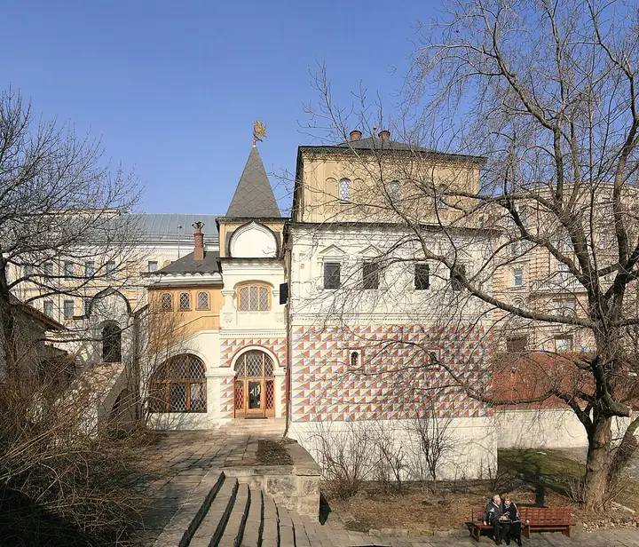

Фото: Ludvig14, CC BY-SA 3.0 · Wikimedia Commons
Музей · ЦАО
Палаты бояр Романовых
Терем XVI–XVII веков на Варварке: как жили московские бояре.
- ₽ · до 1 500 ₽ на человека
- в 1 плане
Позвать сюда: Палаты бояр РомановыхОткрыть в каталоге: Палаты бояр РомановыхМаршрут до места: Палаты бояр Романовых
Адрес и детали
- Адрес
- ул. Варварка, 10
Открыть на Яндекс Картах (в новой вкладке) - Метро
- м. Китай-город
- Округ
- Центр (ЦАО)
- Цена
- до 1 500 ₽ на человека
- Проверено
- работает — проверили в октябре 2026
Планы с этим местом 1
- Палаты бояр Романовых · Музей · м. Китай-город
- 3 минуты пешкомMagritte · Ресторан Аркадия Новикова
Терем XVI–XVII веков на Варварке, где видно, как жили московские бояре, а потом ужин в Magritte Аркадия Новикова с панорамой «Зарядья».
Открыть план: Варварка и МагриттПозвать сюда: Варварка и Магритт
Фото: Ludvig14, CC BY-SA 3.0 · Wikimedia Commons

Похожие рядом


Что ещё рядом

Как позвать
- Выбери план, место или событие — в карточке адрес, цены и маршрут в Яндекс Картах.
- Нажми «Позвать сюда» — соберётся приглашение-игра для свидания или голосование для компании.
- Отправь ссылку в любой мессенджер: тебе ответят, а компания отметит, куда и когда может. Бесплатно и без регистрации.